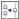
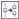

ыстрые ссылки на процедуры, описанные на этой странице:
• |
• |
Сегменты пути можно соединить или разделить для создания открытых или замкнутых путей на изображении. Поскольку узлы служат соединениями в пути, сегменты можно соединять и разделять только в местах узлов. Если в месте, где требуется разделить сегменты, отсутствует узел, его необходимо добавить.
Можно соединить два узла пути, расположенных по краям открытых сегментов. Например, если требуется замкнуть открытый путь, можно соединить начальный и конечный узлы. Можно также соединить подпути.
Если требуется разомкнуть путь или создать подпути, можно разорвать соединение между двумя узлами. На концах разомкнутого пути образуются новые узлы, в результате чего создаются два подпути.
| Соединение узлов пути |
1. |
В наборе инструментов выберите инструмент Путь |
2. |
Нажмите кнопку Фигура на панели свойств.
|
3. |
4. |
На панели свойств нажмите кнопку Соединить узлы .
|
Узлы, расположенные на большом расстоянии друг от друга,
соединяются в центральной точке отрезка между их изначальными
положениями.
|
| Разделение пути |
1. |
В наборе инструментов выберите инструмент Путь |
2. |
Нажмите кнопку Фигура на панели свойств.
|
3. |
Выберите узел.
|
4. |
На панели свойств нажмите кнопку Разъединить узел .
|
5. |
Перетащите узел в сторону от пути.
|
Copyright 2012 Corel Corporation. Все права защищены.